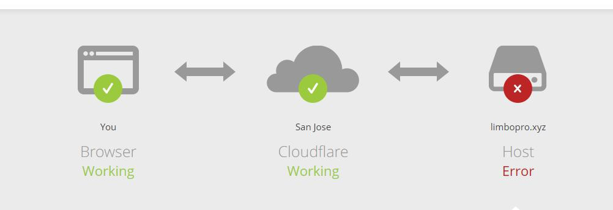

Webbench是Linux下的一个网站压力测试工具，能测试处在相同硬件上，不同服务的性能以及不同硬件上同一个服务的运行状况。webbench的标准测试可以向我们展示服务器的两项内容：每分钟相应请求数和每秒钟传输数据量。webbench最多可以模拟3万个并发连接去测试网站的负载能力。
Webbench
网站压力测试工具
可以模拟3万个并发连接
网站的负载能力
测试的环境是 Linux Ubuntu
Linux Ubuntu
[...]